航空母艦 瑞鶴の碑
執筆日時：
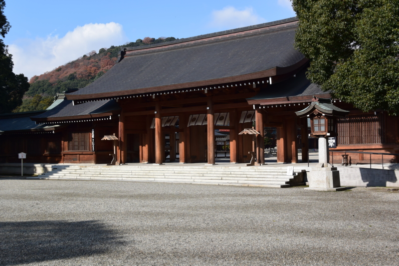
ピーチで松山から大阪まで行ってみたった。 - だるろぐ のあと、JR で天王寺まで行き、近鉄に乗る。向かう先は、橿原神宮。
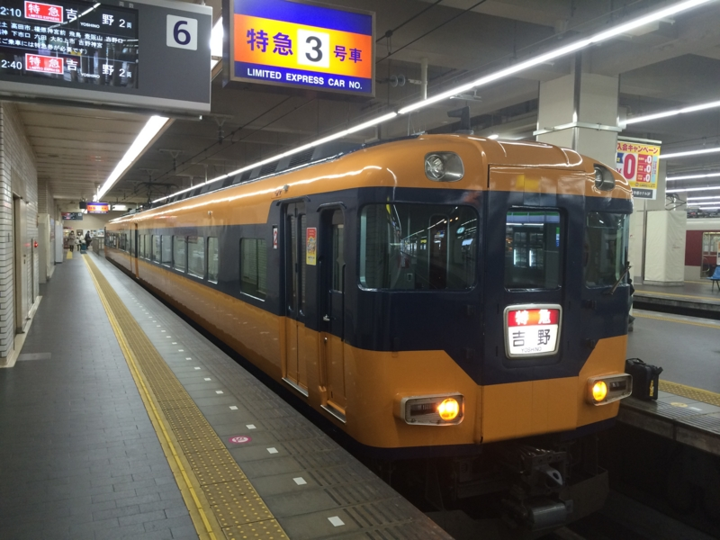
話は少し脱線するけれど、橿原神宮前のあたりは少し馴染みがある。自分が中学受験をしたときに通った塾が、最初ここにあったからだ。
当時の自分は割と器用で、小学校のカラーテストはいつも満点だった。そこで、高くなった鼻をへし折るために母ちゃんが受けさせたのが、今は亡き東京標準という塾の全国テスト。ここで算数が20点少々、国語ですら40点という惨憺たる成績を出して、「あー、なるほど、こういう世界もあるものなのだな」と知った。母ちゃんにサッカーやめて塾へ行けとドヤ顔で言われたとき、それほど抵抗もなく受け入れられたのは、全国テストで身の程を知って、そっちもまぁ、楽しそうかなと思えたからだろう（でも、放課後のサッカーはやめたくなかったので、わざと放送委員になったのだけど。放送委員は下校の放送という神聖な任務があるので、塾があっても居残りをせねばならないのだ）。
そんなこんなで小学校五年生の正月あたりからだったかな、橿原神宮前にあった塾へ通いだした*1。名張から通っていたので1時間ちょっとかかったが、塾に慣れて上のクラスに上がり、西大寺校に転校するまでの短い間（確か小学校六年にあがったときだと思う）、この辺りはよく歩いた。駅そばにあったお店の、イチゴ大福が大好きだったのだけど、まだあるのだろうか。
高校時代も友達と何回か初詣に行ったし、割とよく訪れていたはずの橿原神宮だが、ここに「瑞鶴」の碑があるのはまったく知らなかった。人間というものは、興味のないものは目にうつらないようになっているんだろう。まぁ、だからこそ興味のアンテナを広げておくことはとても大事なんだな。
――さてさて。
橿原神宮の歴史は割と浅い。初代天皇・神武天皇を祀るために「たぶんここあたりに都があったんじゃねーかな」と明治天皇が建てたのが始まり。明治政府の正当性を明らかにするためにも、こうした事業は必要だったんだろうね。
個人的には、小学校の頃の「道徳」の時間で習った被差別部落の強制移住問題でよく覚えている。ただ、これには異論もあり、部落のほうが自主的に移転を決めたという話もあるそうだ。差別されるに至った経緯も、もともと神武天皇陵の墓守として免税特権を受けていたことが、かえって妬みの対象となったからであるともいう。この手の話の難しさは到底自分の手には負えないので、この辺りにしておこう。ともあれ、大和三山の一つ・畝傍山の麓にあるこの神宮は立地もよく、神様もきっと喜ばれることだろうと思う。ぜひ一度訪れてほしいところかな。
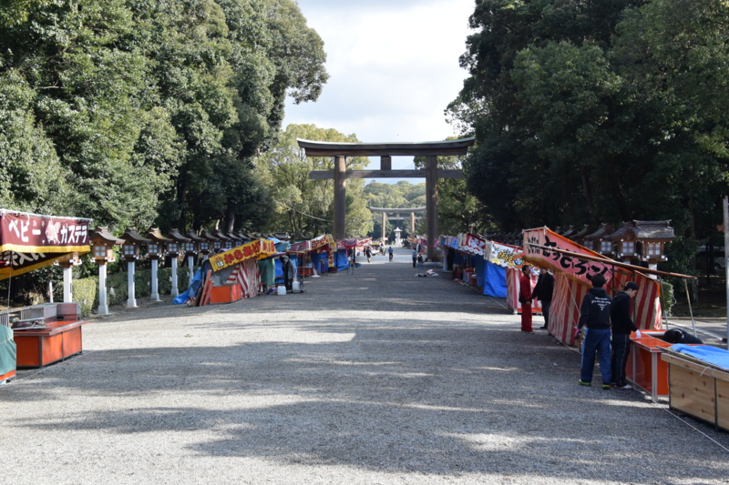
自分が訪れた時は初詣の屋台の準備でみんな忙しそうだった。
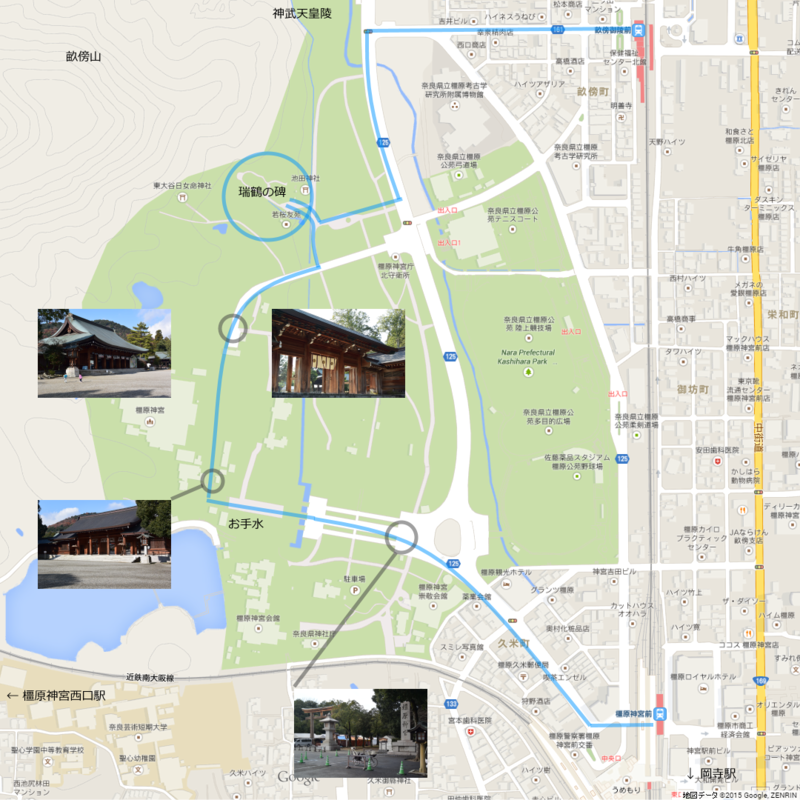
おすすめの参拝ルートはこんな感じ。橿原神宮前駅から出て（神宮方面の出口は橿原線と南大阪線を結ぶコンコースにある）、ゆるりと曲がる大きな道を辿り、鳥居（表口？）をくぐる。そして本殿などにお参りし、畝傍山・神武天皇陵方面に抜けて（裏口？）、畝傍御陵前駅に出る感じ。ちょっと距離はあるので（歩いてたっぷり1時間はかかるかも）、スーツケースなんかは駅かどこかで預けておくといい。
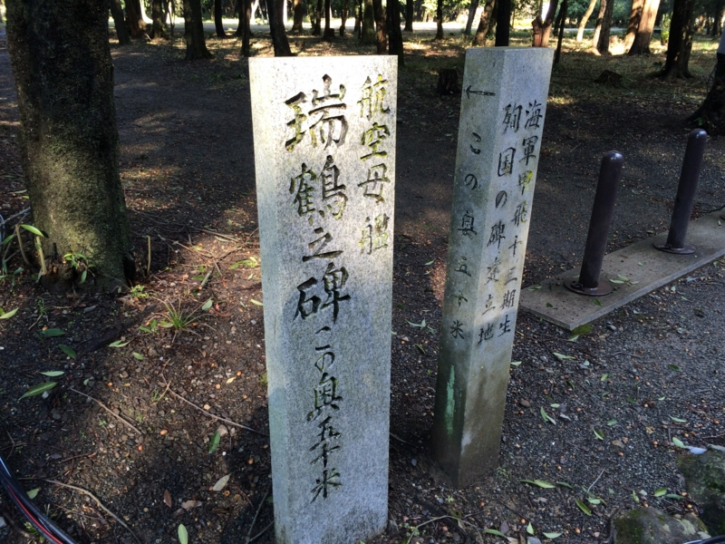
瑞鶴の碑がある 若桜友苑 にいくには、裏口へ行く途中にある小道に折れなければいけない。注意しないと、通り過ぎてしまいそうだ。案内通りに小道をたどると、その先に公園が開ける。
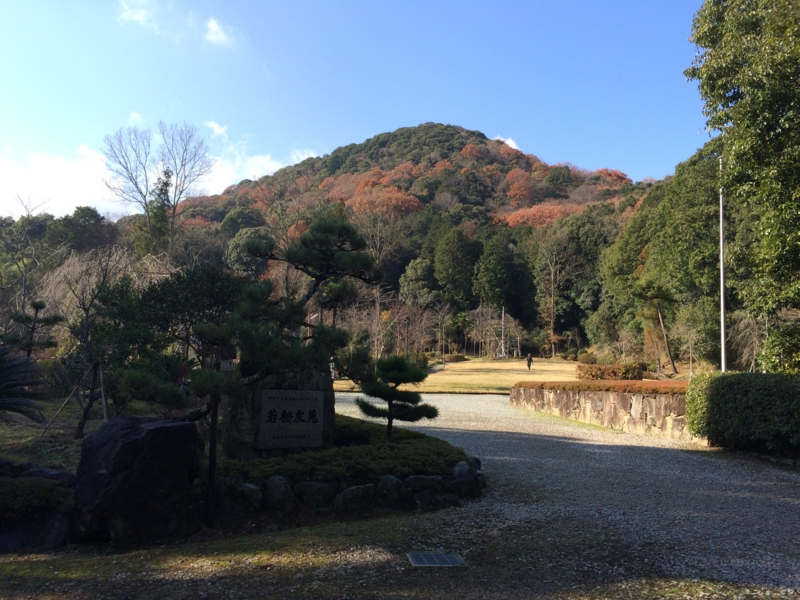
ここは戦没者の英霊を慰める慰霊公苑で、第十三期海軍甲種飛行予科練習生戦没者一千余名を祀った「甲飛十三期殉国の碑」と、航空母艦・瑞鶴の戦没者を祀る「軍艦瑞鶴の碑」が建てられている。とても景色のいいところだと思う。
ここで祀られている“飛行予科練習生”はよく知らないが、海軍の飛行機乗りの訓練生で、甲乙丙の三種に分かれていたらしい。
- 甲：旧制中学校4学年1学期修了以上の学力を有し年齢は満15歳以上20歳未満の志願者
- 乙：高等小学校卒業者で満14歳以上20歳未満で、教育期間は3年
- 丙：海軍の下士官兵からの隊内選抜
甲飛と乙飛は割と仲が悪かったそうだ。あんまり募集条件が変わらないように見えるのに、技量に関わらず昇進速度に差があったりすれば、そんなことになるのかもしれぬ。
甲飛ははじめこそ1,000名に満たない採用数だったが、太平洋戦争が始まると12期生4,000名、13期生以降は万単位で採用されるようになり（13期は昭和18年後半（イタリア降伏、ララベラ海戦、海上護衛総司令部設置）に募集）、一般の航空機ではなく、人間魚雷「回天」、水上特攻艇「震洋」、人間機雷「伏竜」といった特攻兵器にも乗った。……とはいえ、戦前に採用された期が幸せであったかというとそんなこともなく、期によっては実に9割が戦死している。
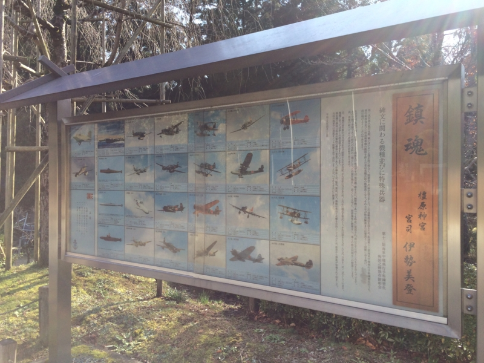
彼らが乗ったかもしれない航空機の数々が解説されたパネル。
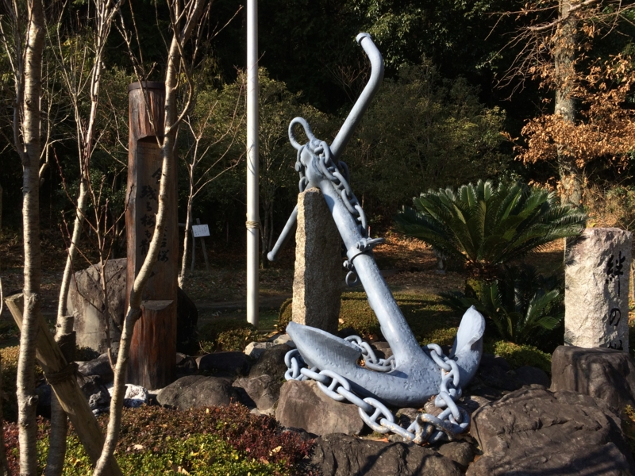
公園の奥、一番高いところに設置された碇。由来はよくわからないが、少なくとも「瑞鶴」のものではなく、海上自衛隊から寄贈されたものだという。
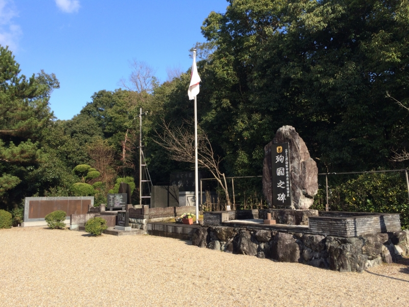
手前が「甲飛十三期殉国の碑」、奥が「軍艦瑞鶴の碑」。
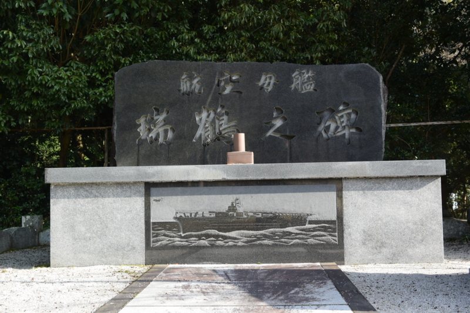
「軍艦瑞鶴の碑」。
「瑞鶴」は、軍縮条約が失効したことを受けた第三次海軍軍備補充計画（マル三計画）に基づき建造された航空母艦「翔鶴」型の二番艦。ちなみに、マル三計画の一号艦はかの戦艦「大和」で、「瑞鶴」は二号艦「武蔵」、三号艦「翔鶴」に続く四号艦にあたる。大和・武蔵の同級生って感じかな。
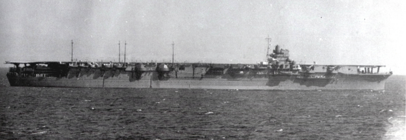
就役したのは真珠湾攻撃直前の1941年（昭和16年）9月25日。完熟訓練すらロクに行われないうちの実戦投入だったが、初陣ではキッチリ先輩空母のサポートを果たした。デビュー後は、姉の「翔鶴」とコンビ（第五航空戦隊、五航戦）を組んで、セイロン沖海戦、珊瑚海海戦などで活躍。珊瑚海海戦の傷を癒している間に、先輩空母がミッドウェー海戦で全滅すると、その後の機動部隊の主力を担うことになる。
その後も、第二次ソロモン海戦、南太平洋海戦、マリアナ沖海戦などの海戦に参加。その間一発の被弾もなく幸運艦と呼ばれたが、姉と優秀な搭乗員、艦載機を失った彼女にもはや空母としての価値はなかった。レイテ沖海戦で囮として使われ、昭和19年10月25日、エンガノ岬沖で米軍機動部隊艦載機によって撃沈された。
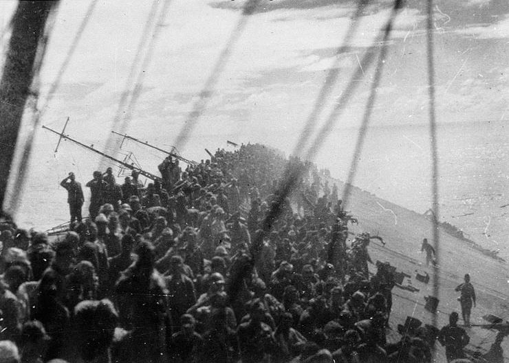
総員退艦時の写真はあまりにも有名。
「瑞鶴」の碑はあるのに「翔鶴」の碑はないのは、「瑞鶴」の生存者のほうが多かったからかもしれない。「翔鶴」は「瑞鶴」と対照的に不幸な艦だったが、その最期も悲惨だった。潜水艦による雷撃を艦前部にうけた「翔鶴」は、艦尾を高々と上げてあっという間に沈んだ。乗組員の多くは絶壁となった甲板を艦首方向へ滑り落ちていったが、そこに待っていたのは気化した航空燃料の爆発で吹っ飛んだ前部昇降エレベーターの穴だった。彼らはその焼けただれた穴に次々と吸い込まれ、「翔鶴」は彼らを飲み込んだまま海に沈んでいったという。戦死者は1,272人、ミッドウェーでもっとも多くの犠牲者を出した「加賀」の811人を上回る（「瑞鶴」は、当初の生存者こそ多かったが、空襲により救助が遅れ、結局843人の死者を出した）。
生き残る人がいなければ、弔う碑さえも残らないということなのか。その意味でも、「瑞鶴」はまだ幸運だったのかもしれない。
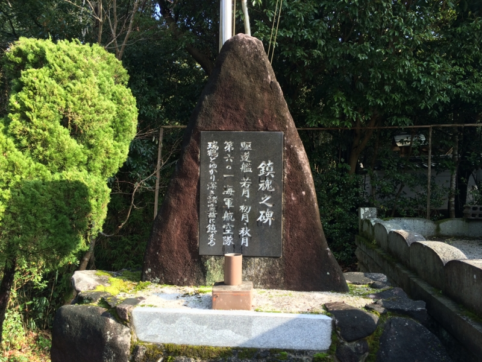
「軍艦瑞鶴の碑」の横には、駆逐艦「若月」「初月」「秋月」の慰霊碑「鎮魂の碑」もある。いずれも第61駆逐隊に属す防空駆逐艦で、「翔鶴」「瑞鶴」（601航空隊）の護衛を担当した。「秋月」はエンガノ岬沖で「瑞鶴」とともに沈んだが、「若月」「初月」は「瑞鶴」らの生存者救出にもあたった。その間、「初月」は撃沈されており、救出作戦がかなり困難なものであったことがうかがえる。そういうこともあって、「ありがとう」という意味で建てられているのだろう。
――今回は、名張までお墓参りに行きたかったので、この辺りで。次来るときは、畝傍山にものぼってゆっくりしたいな。この辺りは、古代史好きな人にはたまらないスポットがてんこ盛りなので、数泊して自転車で回るのがお勧め。飛鳥に行けば、大量にレンタル自転車屋があったように思う。
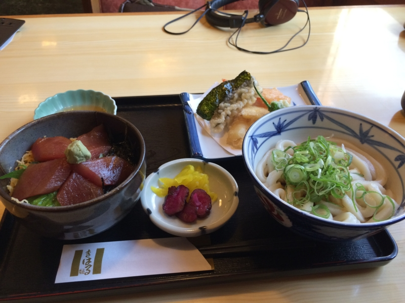
歩きまくって疲れたので、橿原神宮前駅に戻って、エキナカのごはん屋さんでビールと栄養を補給した。奈良なのに、なぜか“伊勢うどん定食”。てんぷらとミニ鉄火丼がついて900円台というリーズナブルさで、3時前だというのにわりと混んでいた。
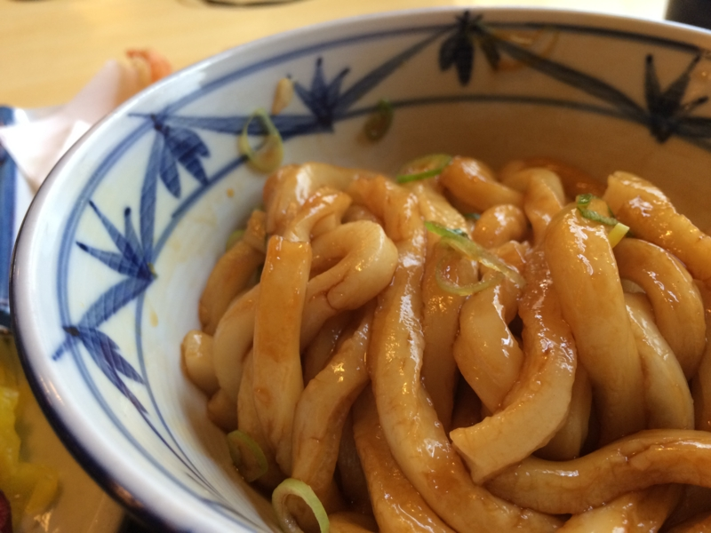
混ぜ混ぜして食うんやで。本家（伊勢参りに行ってきたった。 - だるろぐ）のほうがおいしいけど、伊勢うどん自体好きなので、うまうまと楽しめた。
*1:ほんとうは八木にもあったのだけど、潰れて橿原神宮前に統合されたと記憶している